Discrete Statistical Distributions¶
Discrete random variables take on only a countable number of values.
The commonly used distributions are included in SciPy and described in
this document. Each discrete distribution can take one extra integer
parameter: 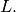 The relationship between the general distribution
 and the standard distribution 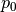 is
and the standard distribution 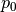 is
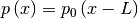
which allows for shifting of the input. When a distribution generator is initialized, the discrete distribution can either specify the beginning and ending (integer) values 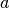 and 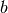 which must be such that
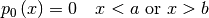
in which case, it is assumed that the pdf function is specified on the
integers 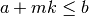 where  is a non-negative integer ( 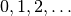 ) and
is a non-negative integer ( 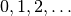 ) and  is a positive integer multiplier. Alternatively, the two lists 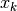 and 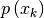 can be provided directly in which case a dictionary is set up
internally to evaulate probabilities and generate random variates.
is a positive integer multiplier. Alternatively, the two lists 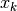 and 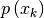 can be provided directly in which case a dictionary is set up
internally to evaulate probabilities and generate random variates.
Probability Mass Function (PMF)¶
The probability mass function of a random variable X is defined as the probability that the random variable takes on a particular value.
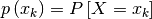
This is also sometimes called the probability density function, although technically
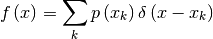
is the probability density function for a discrete distribution [1] .
| [1] | XXX: Unknown layout Plain Layout: Note that we will be using to represent the probability mass function and a parameter (a
XXX: probability). The usage should be obvious from context. |
Cumulative Distribution Function (CDF)¶
The cumulative distribution function is
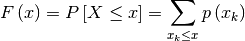
and is also useful to be able to compute. Note that
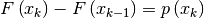
Survival Function¶
The survival function is just
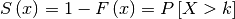
the probability that the random variable is strictly larger than .
Percent Point Function (Inverse CDF)¶
The percent point function is the inverse of the cumulative distribution function and is
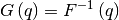
for discrete distributions, this must be modified for cases where there is no such that 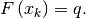 In these cases we choose 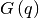 to be the smallest value 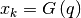 for which 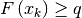 . If 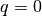 then we define 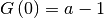 . This definition allows random variates to be defined in the same way as with continuous rv’s using the inverse cdf on a uniform distribution to generate random variates.
Inverse survival function¶
The inverse survival function is the inverse of the survival function
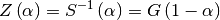
and is thus the smallest non-negative integer for which  or the smallest non-negative integer for which 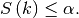
or the smallest non-negative integer for which 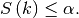
Hazard functions¶
If desired, the hazard function and the cumulative hazard function could be defined as
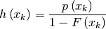
and
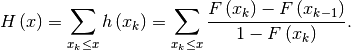
Moments¶
Non-central moments are defined using the PDF
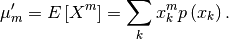
Central moments are computed similarly 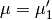
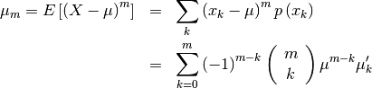
The mean is the first moment
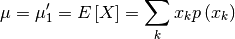
the variance is the second central moment
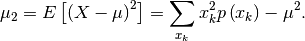
Skewness is defined as
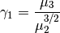
while (Fisher) kurtosis is
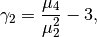
so that a normal distribution has a kurtosis of zero.
Moment generating function¶
The moment generating funtion is defined as
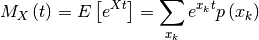
Moments are found as the derivatives of the moment generating function evaluated at 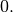
Fitting data¶
To fit data to a distribution, maximizing the likelihood function is common. Alternatively, some distributions have well-known minimum variance unbiased estimators. These will be chosen by default, but the likelihood function will always be available for minimizing.
If 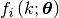 is the PDF of a random-variable where 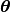 is a vector of parameters ( e.g. 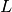 and 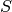 ), then for a collection of 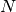 independent samples from this distribution, the joint distribution the random vector 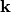 is
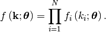
The maximum likelihood estimate of the parameters are the parameters which maximize this function with 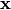 fixed and given by the data:
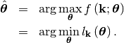
Where
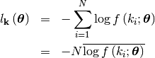
Combinations¶
Note that
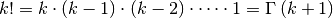
and has special cases of
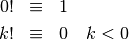
and
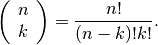
If 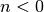 or or we define
Bernoulli¶
A Bernoulli random variable of parameter takes one of only two values or . The probability of success ( ) is , and the probability of failure ( ) is It can be thought of as a binomial random variable with . The PMF is for and

Binomial¶
A binomial random variable with parameters can be described as the sum of  independent Bernoulli random variables of parameter
independent Bernoulli random variables of parameter
Therefore, this random variable counts the number of successes in independent trials of a random experiment where the probability of
success is
where the incomplete beta integral is
Now
![\begin{eqnarray*} p\left(k;N,\lambda\right) & = & \frac{1-e^{-\lambda}}{1-e^{-\lambda N}}\exp\left(-\lambda k\right)\quad k\in\left\{ 0,1,\ldots,N-1\right\} \\ F\left(x;N,\lambda\right) & = & \left\{ \begin{array}{cc} 0 & x<0\\ \frac{1-\exp\left[-\lambda\left(\left\lfloor x\right\rfloor +1\right)\right]}{1-\exp\left(-\lambda N\right)} & 0\leq x\leq N-1\\ 1 & x\geq N-1\end{array}\right.\\ G\left(q,\lambda\right) & = & \left\lceil -\frac{1}{\lambda}\log\left[1-q\left(1-e^{-\lambda N}\right)\right]-1\right\rceil \end{eqnarray*}](../../_images/math/98be7ed3547ec5929f5cdcf735ed2e40210adba6.png)
![\begin{eqnarray*} \mu & = & \frac{z}{1-z}-\frac{Nz^{N}}{1-z^{N}}\\ \mu_{2} & = & \frac{z}{\left(1-z\right)^{2}}-\frac{N^{2}z^{N}}{\left(1-z^{N}\right)^{2}}\\ \gamma_{1} & = & \frac{z\left(1+z\right)\left(\frac{1-z^{N}}{1-z}\right)^{3}-N^{3}z^{N}\left(1+z^{N}\right)}{\left[z\left(\frac{1-z^{N}}{1-z}\right)^{2}-N^{2}z^{N}\right]^{3/2}}\\ \gamma_{2} & = & \frac{z\left(1+4z+z^{2}\right)\left(\frac{1-z^{N}}{1-z}\right)^{4}-N^{4}z^{N}\left(1+4z^{N}+z^{2N}\right)}{\left[z\left(\frac{1-z^{N}}{1-z}\right)^{2}-N^{2}z^{N}\right]^{2}}\end{eqnarray*}](../../_images/math/6c5bf47cd8055dfaa52eb38c1991caeabe0fb830.png)
Planck (discrete exponential)¶
Named Planck because of its relationship to the black-body problem he solved.
Poisson¶
The Poisson random variable counts the number of successes in independent Bernoulli trials in the limit as and where the probability of success in each trial is and is a constant. It can be used to approximate the Binomial random
variable or in it’s own right to count the number of events that occur
in the interval for a process satisfying certain “sparsity “constraints. The functions are

Geometric¶
The geometric random variable with parameter can be defined as the number of trials required to obtain a success
where the probability of success on each trial is . Thus,
Negative Binomial¶
The negative binomial random variable with parameters and can be defined as the number of extra independent trials (beyond ) required to accumulate a total of successes where the probability of a success on each trial is Equivalently, this random variable is the number of failures
encoutered while accumulating successes during independent trials of an experiment that succeeds
with probability Thus,
![\begin{eqnarray*} p\left(k;n,p\right) & = & \left(\begin{array}{c} k+n-1\\ n-1\end{array}\right)p^{n}\left(1-p\right)^{k}\quad k\geq0\\ F\left(x;n,p\right) & = & \sum_{i=0}^{\left\lfloor x\right\rfloor }\left(\begin{array}{c} i+n-1\\ i\end{array}\right)p^{n}\left(1-p\right)^{i}\quad x\geq0\\ & = & I_{p}\left(n,\left\lfloor x\right\rfloor +1\right)\quad x\geq0\\ \mu & = & n\frac{1-p}{p}\\ \mu_{2} & = & n\frac{1-p}{p^{2}}\\ \gamma_{1} & = & \frac{2-p}{\sqrt{n\left(1-p\right)}}\\ \gamma_{2} & = & \frac{p^{2}+6\left(1-p\right)}{n\left(1-p\right)}.\end{eqnarray*}](../../_images/math/402ff43fd78a7c7eb799e52fbe1d370e9d676fd9.png)
Recall that is the incomplete beta integral.
Hypergeometric¶
The hypergeometric random variable with parameters counts the number of “good “objects in a sample of size chosen without replacement from a population of objects where is the number of “good “objects in the total population.
![\begin{eqnarray*} p\left(k;N,n,M\right) & = & \frac{\left(\begin{array}{c} n\\ k\end{array}\right)\left(\begin{array}{c} M-n\\ N-k\end{array}\right)}{\left(\begin{array}{c} M\\ N\end{array}\right)}\quad N-\left(M-n\right)\leq k\leq\min\left(n,N\right)\\ F\left(x;N,n,M\right) & = & \sum_{k=0}^{\left\lfloor x\right\rfloor }\frac{\left(\begin{array}{c} m\\ k\end{array}\right)\left(\begin{array}{c} N-m\\ n-k\end{array}\right)}{\left(\begin{array}{c} N\\ n\end{array}\right)},\\ \mu & = & \frac{nN}{M}\\ \mu_{2} & = & \frac{nN\left(M-n\right)\left(M-N\right)}{M^{2}\left(M-1\right)}\\ \gamma_{1} & = & \frac{\left(M-2n\right)\left(M-2N\right)}{M-2}\sqrt{\frac{M-1}{nN\left(M-m\right)\left(M-n\right)}}\\ \gamma_{2} & = & \frac{g\left(N,n,M\right)}{nN\left(M-n\right)\left(M-3\right)\left(M-2\right)\left(N-M\right)}\end{eqnarray*}](../../_images/math/f53893ea9e0515ded5f0847ebd1efc6faf55e9b6.png)
where (defining )
Zipf (Zeta)¶
A random variable has the zeta distribution (also called the zipf distribution) with parameter if it’s probability mass function is given by
where
is the Riemann zeta function. Other functions of this distribution are
![\begin{eqnarray*} F\left(x;\alpha\right) & = & \frac{1}{\zeta\left(\alpha\right)}\sum_{k=1}^{\left\lfloor x\right\rfloor }\frac{1}{k^{\alpha}}\\ \mu & = & \frac{\zeta_{1}}{\zeta_{0}}\quad\alpha>2\\ \mu_{2} & = & \frac{\zeta_{2}\zeta_{0}-\zeta_{1}^{2}}{\zeta_{0}^{2}}\quad\alpha>3\\ \gamma_{1} & = & \frac{\zeta_{3}\zeta_{0}^{2}-3\zeta_{0}\zeta_{1}\zeta_{2}+2\zeta_{1}^{3}}{\left[\zeta_{2}\zeta_{0}-\zeta_{1}^{2}\right]^{3/2}}\quad\alpha>4\\ \gamma_{2} & = & \frac{\zeta_{4}\zeta_{0}^{3}-4\zeta_{3}\zeta_{1}\zeta_{0}^{2}+12\zeta_{2}\zeta_{1}^{2}\zeta_{0}-6\zeta_{1}^{4}-3\zeta_{2}^{2}\zeta_{0}^{2}}{\left(\zeta_{2}\zeta_{0}-\zeta_{1}^{2}\right)^{2}}.\end{eqnarray*}](../../_images/math/0ceb5a27d26e2be8e9611890d85ab90f20a99b00.png)
where and is the polylogarithm function of  defined as
defined as
Logarithmic (Log-Series, Series)¶
The logarimthic distribution with parameter has a probability mass function with terms proportional to the Taylor
series expansion of
where
is the Lerch Transcendent. Also define
Thus,
Discrete Uniform (randint)¶
The discrete uniform distribution with parameters constructs a random variable that has an equal probability of being any one of the integers in the half-open range If is not given it is assumed to be zero and the only parameter is Therefore,

Discrete Laplacian¶
Defined over all integers for
![\begin{eqnarray*} p\left(k\right) & = & \tanh\left(\frac{a}{2}\right)e^{-a\left|k\right|},\\ F\left(x\right) & = & \left\{ \begin{array}{cc} \frac{e^{a\left(\left\lfloor x\right\rfloor +1\right)}}{e^{a}+1} & \left\lfloor x\right\rfloor <0,\\ 1-\frac{e^{-a\left\lfloor x\right\rfloor }}{e^{a}+1} & \left\lfloor x\right\rfloor \geq0.\end{array}\right.\\ G\left(q\right) & = & \left\{ \begin{array}{cc} \left\lceil \frac{1}{a}\log\left[q\left(e^{a}+1\right)\right]-1\right\rceil & q<\frac{1}{1+e^{-a}},\\ \left\lceil -\frac{1}{a}\log\left[\left(1-q\right)\left(1+e^{a}\right)\right]\right\rceil & q\geq\frac{1}{1+e^{-a}}.\end{array}\right.\end{eqnarray*}](../../_images/math/5a010dd265d8c70e6d80ff9fa85f0438217b0eba.png)
Thus,
where is the polylogarithm function of order evaluated at